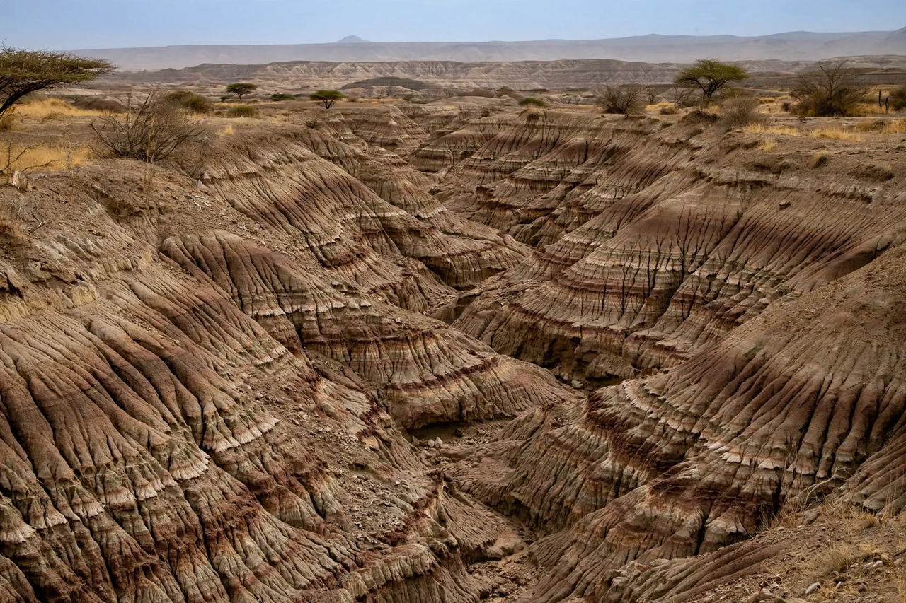

Hadar, Ethiopia
From Wikipedia, the free encyclopedia

Hadar is a paleontological locality in the Afar Region of Ethiopia, in the lower Awash valley, famous for its dense record of early hominin fossils of the species Australopithecus afarensis — above all Lucy (AL 288-1), found there in 1974 by Donald Johanson's team, and the 'First Family' (AL 333), a group of at least 13 individuals who may have died together 3.2 million years ago.
The site
The Hadar Formation's lake and river sediments (roughly 3.4–2.9 million years old) erode into badlands that expose fossil bone each rainy season. A Franco-American expedition under Maurice Taieb mapped the geology; the International Afar Research Expedition (Johanson, Taieb, Yves Coppens) worked it in 1973–77, and the Hadar Research Project returned from the 1990s under Kimbel and Rak.
Finds
Beyond Lucy: the AL 333 'First Family' (1975), a complete afarensis skull (AL 444-2, 1992), the Dikika child 'Selam' from across the river (3.3 Ma, found 2000), and abundant fauna reconstructing a wooded lakeshore habitat. Together they make Hadar the reference section for human evolution's pivotal chapter — the bipedal, small-brained ape from which later hominins descend.